Sportivitas
Semua atlet tampil di arena, jadwal, dan penjurian yang sama, berpedoman pada Code of Points FIG. Menghormati lawan, juri, dan hasil adalah bagian dari pertandingan.
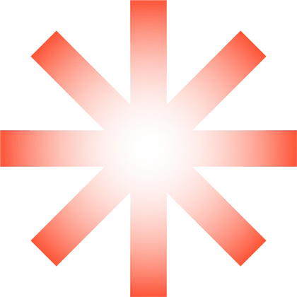
Kejuaraan gimnastik terbuka12–20 Desember 2026 · Bandung
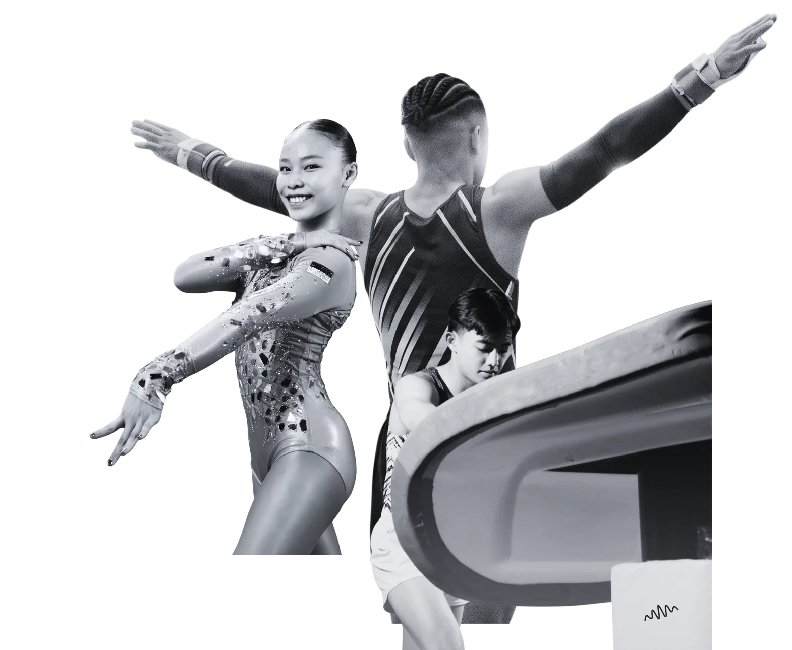
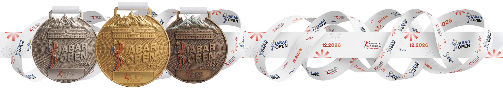
Mengapa kita bertanding
Kompetisi adalah cermin yang jujur. Latihan berbulan-bulan diuji dalam satu rutinitas, dinilai dengan aturan yang sama untuk semua, lalu menjadi bekal untuk langkah berikutnya.
Semua atlet tampil di arena, jadwal, dan penjurian yang sama, berpedoman pada Code of Points FIG. Menghormati lawan, juri, dan hasil adalah bagian dari pertandingan.
Medali untuk tiga besar, nilai untuk semua. Setiap skor menunjukkan apa yang sudah dikuasai dan apa yang perlu dilatih lagi. Jam terbang adalah bagian dari pembinaan.
Kekuatan, kelenturan, keseimbangan, koordinasi, dan kesadaran tubuh: fondasi gerak yang dibangun gimnastik terbawa ke hampir semua cabang olahraga lain.
Geser untuk melihat semua
Tace et ostende.Ad astra per aspera.
Diam dan buktikan. Menuju bintang, melalui jalan yang terjal.
Semboyan Gimnastik Indonesia Jawa BaratTentang kejuaraan
Geser untuk melihat semua
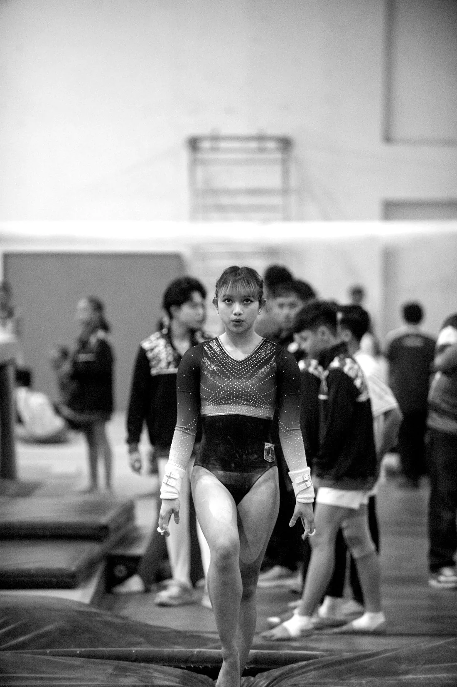
Jadwal sementara
Sesi, grup, dan urutan tampil setiap atlet diumumkan di halaman start list setelah pendaftaran ditutup. Tidak ada registrasi ulang di lokasi.
Geser untuk melihat semua
Jadwal dapat berubah. Pengumuman resmi di start list dan Instagram @gimnastikjabar.
Pendaftaran
Daftar perorangan atau sebagai klub dan sekolah, hingga lima atlet sekaligus. Dibayar sekali lewat QRIS. Batas pendaftaran 12 November 2026.
Opsional, per entri. Untuk atlet WNI beralamat (sesuai identitas) di Jawa Barat dari klub di Jawa Barat: hasilnya diperingkat ulang untuk penghargaan dan tabel medali Priangan.
Identitas atlet (KTP, akta kelahiran, ijazah, atau paspor), data wali untuk atlet di bawah 18 tahun, serta BPJS atau asuransi.
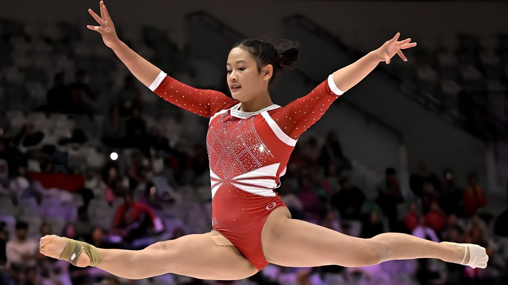
Pendaftaran atlet dibuka
Ukir namamu di podium Gymnasium Arcamanik. Daftar sendiri atau bersama klub, bayar sekali, dan terima e-ticket untuk setiap atlet.
Foto: Antara News
Dari arena
Keberanian di atas matras, pelatih di pinggir arena, dan kebersamaan yang ingin kami hadirkan lagi di Arcamanik.
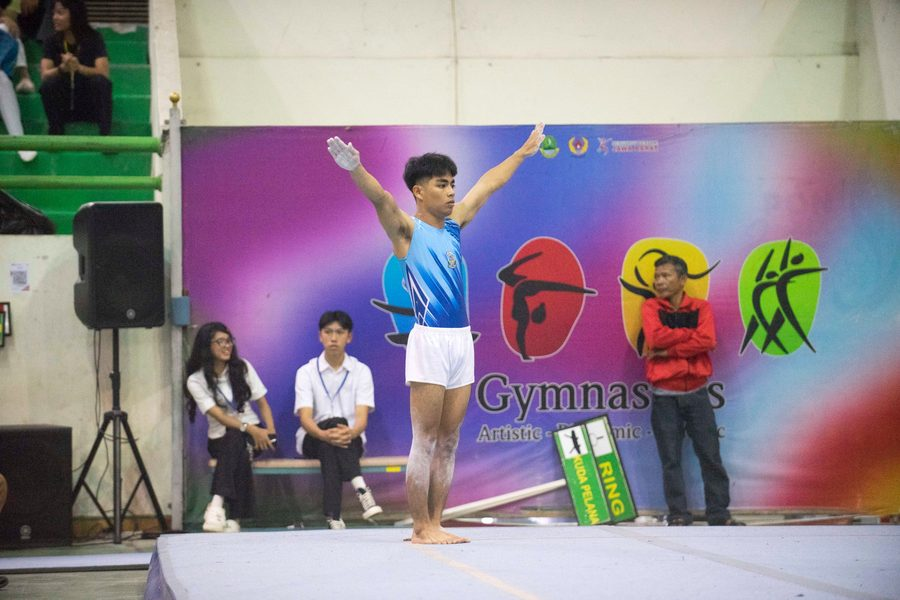
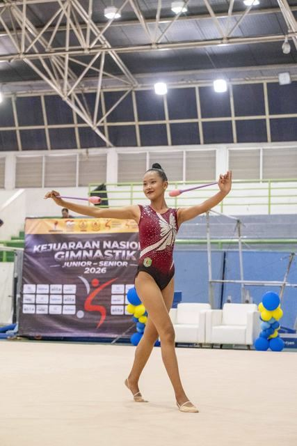
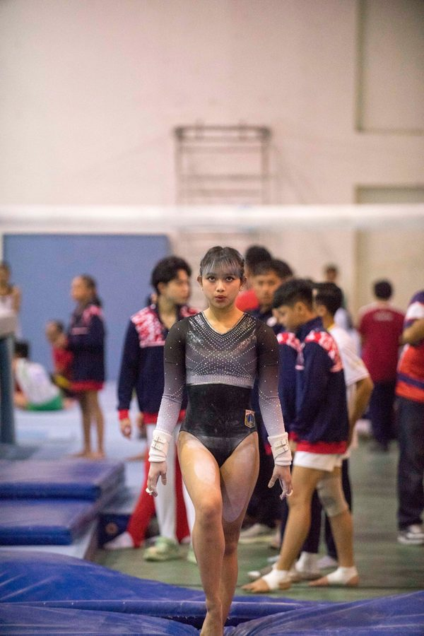
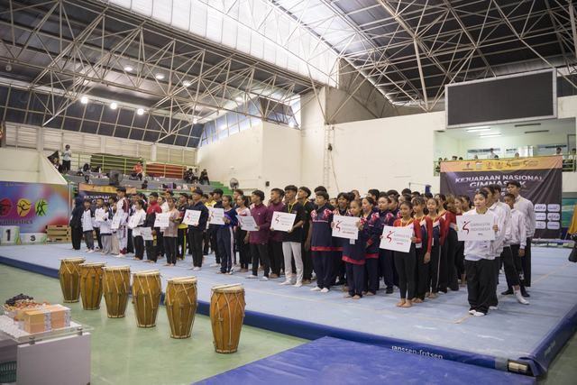
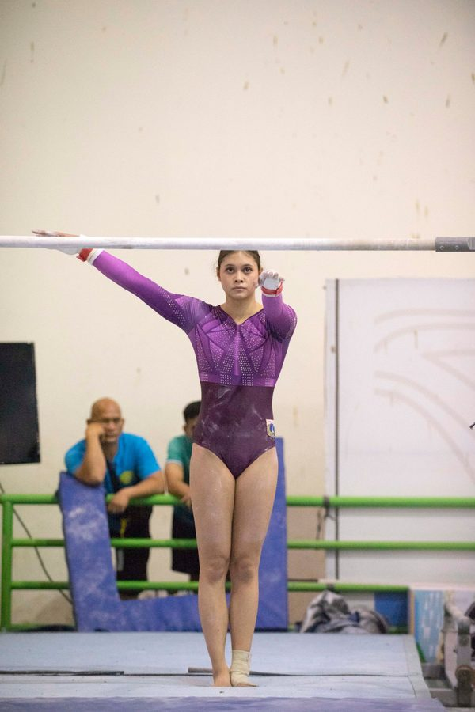
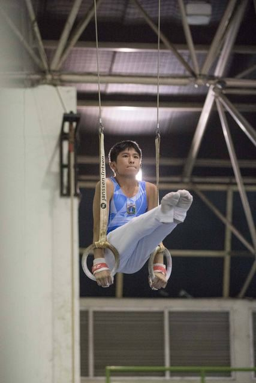
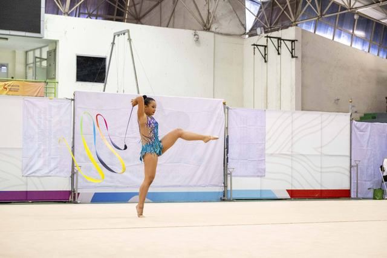
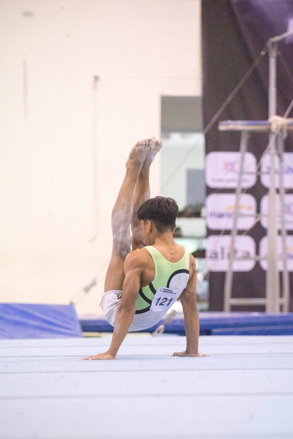
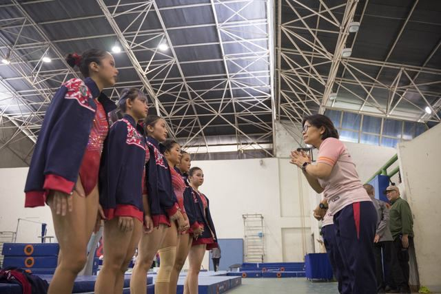
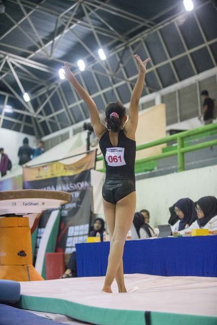
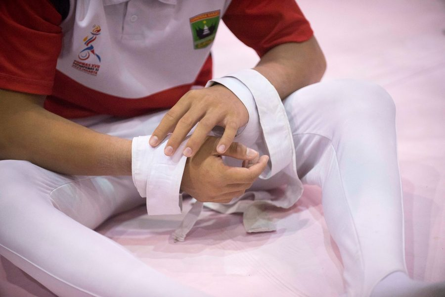
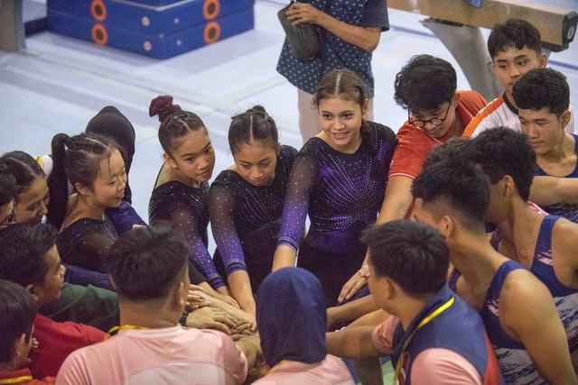
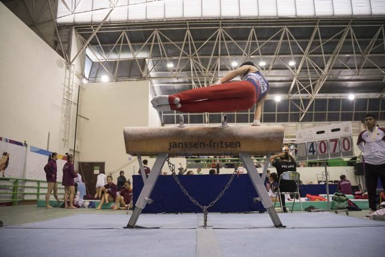
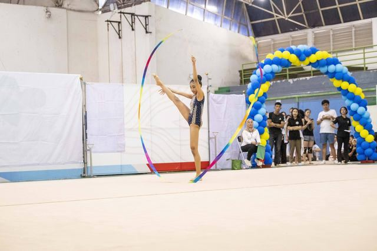
Merchandise resmi
Segera hadir
Koleksi resmi Jabar Open 2026 sedang kami siapkan: dirancang dari identitas kejuaraan, dibuat dalam jumlah terbatas, untuk siapa saja yang ingin membawa pulang sepotong cerita dari arena.
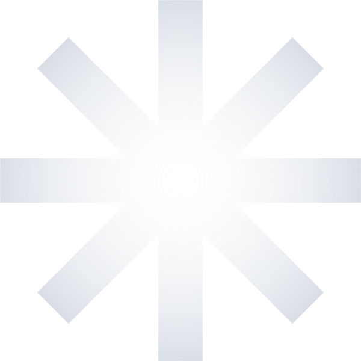
Pratinjau koleksi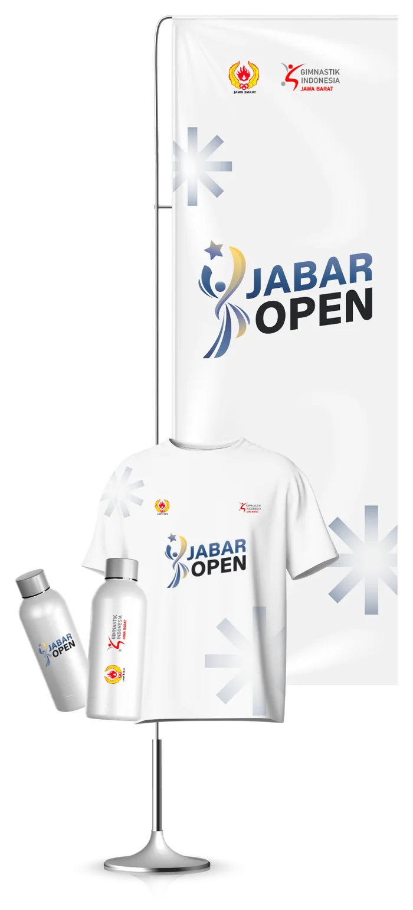
Akun resmi Gimnastik Indonesia Jawa Barat. Pengumuman, start list, dan momen dari arena dibagikan di sana lebih dulu.
Hubungi kami
Pendaftaran, pembayaran, dan data atlet lewat email. Pertanyaan teknis per disiplin ke narahubung masing-masing lewat WhatsApp.
Sertakan kode pendaftaran (JO26-…) agar pertanyaan Anda cepat ditangani.
Kirim emailGymnasium Arcamanik, Bandung · 12–20 Desember 2026